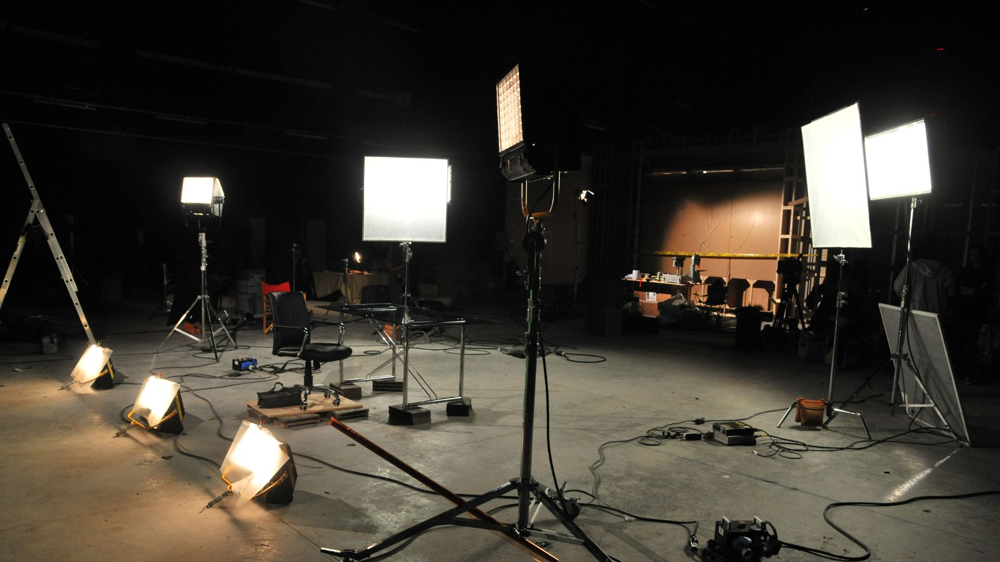
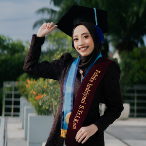

<!DOCTYPE html>
<html lang="id">
<head>
  <meta charset="UTF-8">
  <meta name="viewport" content="width=device-width, initial-scale=1.0">
  <title>Portofolio - Febika Indriyani</title>
  
  <!-- Tailwind CSS CDN -->
  <script src="https://cdn.tailwindcss.com"></script>
  
  <!-- React & ReactDOM CDN -->
  <script src="https://unpkg.com/react@18/umd/react.production.min.js" crossorigin></script>
  <script src="https://unpkg.com/react-dom@18/umd/react-dom.production.min.js" crossorigin></script>
  
  <!-- Babel CDN (Untuk menerjemahkan JSX di dalam browser) -->
  <script src="https://unpkg.com/@babel/standalone/babel.min.js"></script>

  <style>
    /* Custom Animasi CSS */
    @keyframes fadeInUp {
      from { opacity: 0; transform: translateY(30px); }
      to { opacity: 1; transform: translateY(0); }
    }
    .animate-fade-in-up {
      animation: fadeInUp 0.8s ease-out forwards;
    }

    /* Animasi Glowing Blobs (Cahaya melayang) */
    @keyframes blob {
      0% { transform: translate(0px, 0px) scale(1); }
      33% { transform: translate(30px, -50px) scale(1.1); }
      66% { transform: translate(-20px, 20px) scale(0.9); }
      100% { transform: translate(0px, 0px) scale(1); }
    }
    .animate-blob {
      animation: blob 7s infinite;
    }
    .animation-delay-2000 { animation-delay: 2s; }
    .animation-delay-4000 { animation-delay: 4s; }

    /* --- SETTING EFEK LIQUID GLASS (KACA) --- */
    /* Anda bisa mengubah nilai blur dan transparansi (opacity) di sini */
    :root {
      --glass-blur: 16px; /* Semakin besar angkanya, semakin ngeblur latar belakangnya */
      --glass-opacity-dark: 0.35; /* Transparansi mode malam (0.0 sangat bening, 1.0 sangat pekat) */
      --glass-opacity-light: 0.35; /* PERBAIKAN: Disamakan menjadi 0.35 agar mode siang juga transparan */
    }

    .glass-light {
      background: rgba(255, 255, 255, var(--glass-opacity-light));
      backdrop-filter: blur(var(--glass-blur));
      -webkit-backdrop-filter: blur(var(--glass-blur));
      border: 1px solid rgba(255, 255, 255, 0.8);
      box-shadow: 0 8px 32px 0 rgba(148, 163, 184, 0.15);
    }
    
    .glass-dark {
      background: rgba(15, 23, 42, var(--glass-opacity-dark));
      backdrop-filter: blur(var(--glass-blur));
      -webkit-backdrop-filter: blur(var(--glass-blur));
      border: 1px solid rgba(255, 255, 255, 0.15);
      box-shadow: 0 8px 32px 0 rgba(0, 0, 0, 0.3);
    }

    /* Efek hover kaca mengkilap */
    .glass-hover-effect {
      transition: all 0.3s ease;
    }
    .glass-hover-effect:hover {
      transform: translateY(-5px);
      box-shadow: 0 12px 40px 0 rgba(0, 0, 0, 0.4);
    }
    .dark .glass-hover-effect:hover {
      background: rgba(30, 41, 59, 0.5);
      border: 1px solid rgba(255, 255, 255, 0.3);
    }
  </style>
</head>
<body class="bg-slate-50 text-slate-800 antialiased overflow-x-hidden">
  
  <div id="root"></div>

  <script type="text/babel">
    const { useState, useEffect, useRef } = React;

    // =========================================================================
    // 📁 PANDUAN STRUKTUR FOLDER & GAMBAR UNTUK GITHUB PAGES
    // =========================================================================
    // 📁 (Folder Utama Website Anda)
    // ├── 📄 index.html                <-- (File ini)
    // └── 📁 assets
    //     └── 📁 images
    //         ├── 📄 background.jpg    <-- BACKGROUND UTAMA (Ukuran: 1920x1080 px, foto syuting/landscape)
    //         ├── 📄 profile.jpg       <-- FOTO PROFIL (Ukuran: 400x400 px, bentuk persegi 1:1)
    //         ├── 📄 project-1.jpg     <-- THUMBNAIL KARYA 1 (Ukuran: 800x450 px, landscape 16:9)
    //         ├── 📄 project-2.jpg     <-- THUMBNAIL KARYA 2 (Ukuran: 800x450 px)
    //         ├── 📄 project-5.jpg     <-- THUMBNAIL KARYA 5 (Ukuran: 800x450 px)
    //         ├── 📄 project-8.jpg     <-- THUMBNAIL KARYA 8 (Ukuran: 800x450 px)
    //         ├── 📄 project-9.jpg     <-- THUMBNAIL KARYA 9 (Ukuran: 800x450 px)
    //         ├── 📄 project-10.jpg    <-- THUMBNAIL KARYA 10 (Ukuran: 800x450 px)
    //         └── 📄 project-11.jpg    <-- THUMBNAIL KARYA 11 (Ukuran: 800x450 px)
    // =========================================================================

    // Kumpulan Icon SVG
    const IconSun = () => <svg width="24" height="24" viewBox="0 0 24 24" fill="none" stroke="currentColor" strokeWidth="2" strokeLinecap="round" strokeLinejoin="round"><circle cx="12" cy="12" r="4"></circle><path d="M12 2v2"></path><path d="M12 20v2"></path><path d="m4.93 4.93 1.41 1.41"></path><path d="m17.66 17.66 1.41 1.41"></path><path d="M2 12h2"></path><path d="M20 12h2"></path><path d="m6.34 17.66-1.41 1.41"></path><path d="m19.07 4.93-1.41 1.41"></path></svg>;
    const IconMoon = () => <svg width="24" height="24" viewBox="0 0 24 24" fill="none" stroke="currentColor" strokeWidth="2" strokeLinecap="round" strokeLinejoin="round"><path d="M12 3a6 6 0 0 0 9 9 9 9 0 1 1-9-9Z"></path></svg>;
    const IconMapPin = () => <svg width="18" height="18" viewBox="0 0 24 24" fill="none" stroke="currentColor" strokeWidth="2" strokeLinecap="round" strokeLinejoin="round"><path d="M20 10c0 6-8 12-8 12s-8-6-8-12a8 8 0 0 1 16 0Z"></path><circle cx="12" cy="10" r="3"></circle></svg>;
    const IconChevronDown = () => <svg width="18" height="18" viewBox="0 0 24 24" fill="none" stroke="currentColor" strokeWidth="2" strokeLinecap="round" strokeLinejoin="round"><path d="m6 9 6 6 6-6"></path></svg>;
    const IconYoutube = () => <svg width="16" height="16" viewBox="0 0 24 24" fill="none" stroke="currentColor" strokeWidth="2" strokeLinecap="round" strokeLinejoin="round" className="mr-2 shrink-0"><path d="M2.5 7.1C2.6 5.3 4 3.9 5.8 3.8 9.9 3.5 14.1 3.5 18.2 3.8 20 3.9 21.4 5.3 21.5 7.1 21.8 10.4 21.8 13.6 21.5 16.9 21.4 18.7 20 20.1 18.2 20.2 14.1 20.5 9.9 20.5 5.8 20.2 4 20.1 2.6 18.7 2.5 16.9 2.2 13.6 2.2 10.4 2.5 7.1Z"></path><path d="m10 15 5-3-5-3v6Z"></path></svg>;
    const IconDrive = () => <svg width="16" height="16" viewBox="0 0 24 24" fill="none" stroke="currentColor" strokeWidth="2" strokeLinecap="round" strokeLinejoin="round" className="mr-2 shrink-0"><path d="M21 15v4a2 2 0 0 1-2 2H5a2 2 0 0 1-2-2v-4"></path><polyline points="7 10 12 15 17 10"></polyline><line x1="12" y1="15" x2="12" y2="3"></line></svg>;
    const IconSpotify = () => <svg width="16" height="16" viewBox="0 0 24 24" fill="none" stroke="currentColor" strokeWidth="2" strokeLinecap="round" strokeLinejoin="round" className="mr-2 shrink-0"><circle cx="12" cy="12" r="10"></circle><path d="M8 11.85c.8-.4 1.9-.6 3.1-.6s2.3.2 3.1.6"></path><path d="M7 15.35c1-.5 2.4-.8 3.8-.8s2.8.3 3.8.8"></path><path d="M9 8.35c.6-.3 1.4-.5 2.2-.5s1.6.2 2.2.5"></path></svg>;
    const IconLinkedin = () => <svg width="22" height="22" viewBox="0 0 24 24" fill="none" stroke="currentColor" strokeWidth="2" strokeLinecap="round" strokeLinejoin="round"><path d="M16 8a6 6 0 0 1 6 6v7h-4v-7a2 2 0 0 0-2-2 2 2 0 0 0-2 2v7h-4v-7a6 6 0 0 1 6-6z"></path><rect x="2" y="9" width="4" height="12"></rect><circle cx="4" cy="4" r="2"></circle></svg>;
    const IconMail = () => <svg width="22" height="22" viewBox="0 0 24 24" fill="none" stroke="currentColor" strokeWidth="2" strokeLinecap="round" strokeLinejoin="round"><rect width="20" height="16" x="2" y="4" rx="2"></rect><path d="m22 7-8.97 5.7a1.94 1.94 0 0 1-2.06 0L2 7"></path></svg>;
    const IconPhone = () => <svg width="22" height="22" viewBox="0 0 24 24" fill="none" stroke="currentColor" strokeWidth="2" strokeLinecap="round" strokeLinejoin="round"><path d="M22 16.92v3a2 2 0 0 1-2.18 2 19.79 19.79 0 0 1-8.63-3.07 19.5 19.5 0 0 1-6-6 19.79 19.79 0 0 1-3.07-8.67A2 2 0 0 1 4.11 2h3a2 2 0 0 1 2 1.72 12.84 12.84 0 0 0 .7 2.81 2 2 0 0 1-.45 2.11L8.09 9.91a16 16 0 0 0 6 6l1.27-1.27a2 2 0 0 1 2.11-.45 12.84 12.84 0 0 0 2.81.7A2 2 0 0 1 22 16.92z"></path></svg>;

    // --- KOMPONEN BACKGROUND (IMAGE + ANIMASI MERIAH) ---
    const BackgroundVisuals = ({ isDark }) => {
      const canvasRef = useRef(null);

      // Animasi Partikel Jatuh
      useEffect(() => {
        const canvas = canvasRef.current;
        const ctx = canvas.getContext('2d');
        let animationFrameId;

        const setCanvasSize = () => {
          canvas.width = window.innerWidth;
          canvas.height = window.innerHeight;
        };
        
        setCanvasSize();
        window.addEventListener('resize', setCanvasSize);

        const particles = [];
        for (let i = 0; i < 50; i++) {
          particles.push({
            x: Math.random() * canvas.width,
            y: Math.random() * canvas.height,
            size: Math.random() * 2.5 + 0.5,
            speedY: Math.random() * 1 + 0.2,
            speedX: (Math.random() - 0.5) * 0.5,
            opacity: Math.random() * 0.5 + 0.2
          });
        }

        const animate = () => {
          ctx.clearRect(0, 0, canvas.width, canvas.height);
          particles.forEach(p => {
            p.y += p.speedY;
            p.x += p.speedX;
            if (p.y > canvas.height) {
              p.y = 0 - p.size;
              p.x = Math.random() * canvas.width;
            }
            // Partikel akan putih di dark mode, dan indigo/ungu di light mode
            ctx.fillStyle = isDark ? `rgba(255, 255, 255, ${p.opacity})` : `rgba(79, 70, 229, ${p.opacity})`;
            ctx.beginPath();
            ctx.arc(p.x, p.y, p.size, 0, Math.PI * 2);
            ctx.fill();
          });
          animationFrameId = requestAnimationFrame(animate);
        };
        animate();
        return () => {
          window.removeEventListener('resize', setCanvasSize);
          cancelAnimationFrame(animationFrameId);
        };
      }, [isDark]);

      return (
        <div className={`fixed inset-0 z-0 overflow-hidden transition-colors duration-700 ${isDark ? 'bg-slate-950' : 'bg-slate-50'}`}>
          
          {/* Gambar Latar Belakang */}
           {
              e.target.onerror = null;
              e.target.src = "https://images.unsplash.com/photo-1598899134739-24c46f58b8c0?q=80&w=1920&auto=format&fit=crop"; 
            }}
          />
          
          {/* Animasi Cahaya (Glowing Blobs) */}
          <div className={`absolute top-[-10%] left-[-10%] w-96 h-96 rounded-full mix-blend-multiply filter blur-[100px] animate-blob ${isDark ? 'bg-indigo-500/40' : 'bg-indigo-300/60'}`}></div>
          <div className={`absolute top-[20%] right-[-10%] w-96 h-96 rounded-full mix-blend-multiply filter blur-[100px] animate-blob animation-delay-2000 ${isDark ? 'bg-purple-500/40' : 'bg-purple-300/60'}`}></div>
          <div className={`absolute bottom-[-20%] left-[20%] w-96 h-96 rounded-full mix-blend-multiply filter blur-[100px] animate-blob animation-delay-4000 ${isDark ? 'bg-pink-500/40' : 'bg-pink-300/60'}`}></div>

          {/* Partikel Canvas */}
          <canvas ref={canvasRef} className="absolute inset-0 pointer-events-none" />
        </div>
      );
    };

    // --- KOMPONEN UTAMA (PORTFOLIO) ---
    const Portfolio = () => {
      // Default mode disetel ke true (Mode Malam/Dark Mode)
      const [isDark, setIsDark] = useState(true);

      // --- DATA PORTOFOLIO TERBARU ---
      const projects = [
        {
          id: 1,
          title: "TA Dokumenter Kronika Ampo Imogiri Dalam Simpang Rasa & Warisan",
          date: "Sep – Okt 2025",
          role: "Produser",
          description: "Bertanggung jawab sebagai Produser dalam produksi dokumenter, mulai dari pengembangan ide hingga eksekusi produksi. Mengelola perencanaan produksi, termasuk penyusunan jadwal shooting, pengembangan konsep menjadi treatment, serta penyusunan anggaran produksi. Memastikan alur produksi berjalan efektif dan sesuai dengan visi kreatif yang telah ditetapkan.",
          links: [{ type: 'drive', url: 'https://drive.google.com/file/d/1BpIWJLaIlKZrzag7vMLstPSd_WyIDA54/view?usp=drive_link', label: 'Tonton Video' }],
          image: "./assets/images/project-1.jpg"
        },
        {
          id: 2,
          title: "Magang BPSDMP Kominfo Surabaya",
          date: "Jan – Feb 2025",
          role: "Divisi Publikasi",
          description: "Bertanggung jawab dalam pembuatan konten publikasi digital, termasuk penulisan caption dan copywriting untuk kebutuhan media sosial dan video. Menyusun naskah singkat (script) untuk konten video serta berperan sebagai voice over dalam produksi konten. Berkontribusi dalam penyampaian informasi yang jelas, menarik, dan sesuai dengan kebutuhan komunikasi instansi.",
          links: [
            { type: 'drive', url: 'https://drive.google.com/file/d/1lVfTk2HNet_ehnWB_558VcM5sGMZmr_m/view?usp=drive_link', label: 'Tonton Video 1' },
            { type: 'instagram', url: 'https://www.instagram.com/reel/DFzbElsyk4N/?igsh=OTc1MHg2Nmo0amxo', label: 'Tonton Video 2' },
            { type: 'instagram', url: 'https://www.instagram.com/reel/DFzFbdByu1v/?igsh=MTB6d3FhMzVpbWFlZw==', label: 'Tonton Video 3' },
            { type: 'instagram', url: 'https://www.instagram.com/reel/DFu3NLsSgAx/?igsh=N2syMTRyMnNoZWkx', label: 'Tonton Video 4' },
            { type: 'instagram', url: 'https://www.instagram.com/reel/DFodMJJvxj0/?igsh=M296ZnZza3JrdTg2', label: 'Tonton Video 5' },
            { type: 'instagram', url: 'https://www.instagram.com/reel/DFnRS2CyDZM/?igsh=MXR4Y2Q3dm94Y2NzZw==', label: 'Tonton Video 6' },
            { type: 'instagram', url: 'https://www.instagram.com/reel/DFkdVyOSuH3/?igsh=MWc4cGh4bmt1cG14YQ==', label: 'Tonton Video 7' },
            { type: 'instagram', url: 'https://www.instagram.com/reel/DFkScsmyPkN/?igsh=cnU3b280b2hzZTA=', label: 'Tonton Video 8' },
            { type: 'instagram', url: 'https://www.instagram.com/reel/DFfl4jVypz1/?igsh=ZmJrdzNmdG5sdm8=', label: 'Tonton Video 9' },
            { type: 'instagram', url: 'https://www.instagram.com/reel/DFRoM13y8ok/?igsh=MThrY2lqMjk2M2FmNg==', label: 'Tonton Video 10' },
            { type: 'instagram', url: 'https://www.instagram.com/reel/DFQBdgxSswc/?igsh=MWxpNDgyMHRvc291Mw==', label: 'Tonton Video 11' },
            { type: 'instagram', url: 'https://www.instagram.com/reel/DFM3a4vyfMr/?igsh=NjNteWM4cGZzOTQy', label: 'Tonton Video 12' }
          ],
          image: "./assets/images/project-3.jpg"
        },
        {
          id: 3,
          title: "Video Dokumenter SMA IT Abu Bakar Jogja",
          date: "Mei 2025",
          role: "Tim Riset",
          description: "Melakukan riset mendalam terkait topik dan objek dokumenter sebagai dasar pengembangan konsep.",
          links: [{ type: 'youtube', url: 'https://youtu.be/pWdZiWP96RA?si=8Ahhx4HbbsopdxK4', label: 'Tonton Video' }],
          image: null
        },
        {
          id: 4,
          title: "Talkshow TV",
          date: "Sep – Okt 2024",
          role: "Crew Creative",
          description: "Bertanggung jawab dalam menyiapkan kebutuhan produksi talkshow, termasuk pengelolaan properti dan materi konten. Mendukung kelancaran proses produksi melalui koordinasi dengan tim dan memastikan seluruh kebutuhan teknis serta kreatif terpenuhi.",
          links: [{ type: 'youtube', url: 'https://youtube.com/live/kb5H9B29sFA?feature=share', label: 'Tonton Video' }],
          image: null 
        },
        {
          id: 5,
          title: "Talkshow Radio Visual",
          date: "Jul – Agus 2024",
          role: "Produser",
          description: "Memimpin dan mengelola program talkshow, mulai dari perencanaan hingga pelaksanaan produksi. Bertanggung jawab dalam penyusunan laporan program serta administrasi dan persuratan yang berkaitan dengan kegiatan produksi. Mengkoordinasikan tim untuk memastikan jalannya program sesuai dengan konsep dan target yang ditetapkan. Mengumpulkan dan mengolah informasi untuk mendukung alur cerita yang informatif dan terstruktur. Menyusun daftar pertanyaan untuk narasumber guna menggali informasi yang relevan dan bernilai.",
          links: [
            { type: 'spotify', url: 'https://open.spotify.com/episode/0zGbJeXvGaqH1Si2ocY0az?si=jmFUCQEJTuCgxGsgETpntw', label: 'Dengarkan Podcast' },
            { type: 'youtube', url: 'https://youtu.be/4YLXZZa5O0w', label: 'Tonton Video 1' },
            { type: 'youtube', url: 'https://youtube.com/live/H92FoBGmIH0?feature=share', label: 'Tonton Video 2' } 
          ],
          image: "./assets/images/project-5.jpg"
        },
        {
          id: 6,
          title: "News Bulletin Radio Visual",
          date: "Jan – Mar 2024",
          role: "Program Director & Reporter",
          description: "Bertanggung jawab penuh atas penyusunan rundown dan alur program siaran. Melakukan reportase dengan kemampuan adaptasi dan situasi yang cepat.",
          links: [
            { type: 'youtube', url: 'https://www.youtube.com/live/Q20-hiNPVes?si=1aZclsik3miWhu5n', label: 'Tonton Video 1' },
            { type: 'youtube', url: 'https://www.youtube.com/live/ANJrUbP_Z4Q?si=ZFUtz1lEFM3fgLTD', label: 'Tonton Video 2' },
            { type: 'youtube', url: 'https://www.youtube.com/live/bVjI4GID0K0?si=9IiwfQn34zPJNvBs', label: 'Tonton Video 3' }
          ],
          image: null
        },
        {
          id: 7,
          title: "News Bulletin TV",
          date: "Mar – Mei 2024",
          role: "News Anchor & Reporter",
          description: "Riset berita aktual dan melakukan wawancara narasumber secara profesional. Membawakan program siaran langsung dengan artikulasi yang jelas dan pembawaan yang engaging.",
          links: [{ type: 'youtube', url: 'https://www.youtube.com/live/eh9ze_jp-8U?si=HGFrKTuMtIvZbwq5', label: 'Tonton Video' }],
          image: null
        },
        {
          id: 8,
          title: "Mobile Journalism",
          date: "2024",
          role: "Reporter Mobile Journalism",
          description: "Memproduksi dan menyiarkan laporan berita secara real-time melalui perangkat mobile.",
          links: [{ type: 'drive', url: 'https://drive.google.com/file/d/10C2w6Vx_59uXNNITrAThp4rt6WWmCTim/view?usp=drive_link', label: 'Tonton Video' }],
          image: "./assets/images/project-8.jpg"
        },
        {
          id: 9,
          title: "Reportase Radio Visual",
          date: "2024",
          role: "Reporter",
          description: "Bertanggung jawab atas pelaporan berita langsung di lokasi dengan penguasaan penuh pada mobile content production dan visual editing.",
          links: [{ type: 'drive', url: 'https://drive.google.com/file/d/1HPrY81jTvVHfnbJiiJ6F3rv-FooMbjvK/view?usp=drive_link', label: 'Tonton Video' }],
          image: "./assets/images/project-9.jpg"
        },
        {
          id: 10,
          title: "Jogja Fashion Carnaval",
          date: "2023",
          role: "Reporter",
          description: "Menyajikan liputan visual mengenai eksibisi busana yang menarik dengan narasi yang dinamis bagi audiens.",
          links: [{ type: 'drive', url: 'https://drive.google.com/file/d/1-GuDVXokXwm77L_SH_ZoRlP4zzmErlkJ/view?usp=drive_link', label: 'Tonton Video' }],
          image: "./assets/images/project-10.jpg" 
        },
        {
          id: 11,
          title: "Program Feature Teknologi “In Tech”",
          date: "Okt 2023",
          role: "Produser",
          description: "Mengelola produksi program feature teknologi “In Tech” dari perencanaan hingga eksekusi, termasuk penyusunan jadwal, pengembangan konsep menjadi treatment dan naskah, pengelolaan anggaran, serta koordinasi dengan narasumber.",
          links: [{ type: 'drive', url: 'https://drive.google.com/file/d/1s0hD1uCxonL0qLN9UndDfrnxlnjZltQI/view?usp=drivesdk', label: 'Tonton Video' }],
          image: "./assets/images/project-11.png" 
        }
      ];

      // Semua icon video disamakan menjadi icon YouTube (Play) untuk keseragaman
      const getIcon = (type) => {
        switch(type) {
          case 'youtube': 
          case 'drive': 
          case 'instagram':
            return <IconYoutube />;
          case 'spotify': 
            return <IconSpotify />;
          default: 
            return <IconExternalLink />;
        }
      };

      // Semua tombol video diseragamkan warnanya (Merah)
      const getButtonColor = (type) => {
        switch(type) {
          case 'youtube': 
          case 'drive': 
          case 'instagram':
            return 'bg-red-500/10 text-red-600 border-red-500/20 hover:bg-red-600 hover:text-white';
          case 'spotify': 
            return 'bg-green-500/10 text-green-700 border-green-500/20 hover:bg-green-600 hover:text-white';
          default: 
            return 'bg-slate-500/10 text-slate-800 border-slate-500/20 hover:bg-slate-600 hover:text-white';
        }
      };

      const getButtonColorDark = (type) => {
        switch(type) {
          case 'youtube': 
          case 'drive': 
          case 'instagram':
            return 'bg-red-500/10 text-red-400 border-red-500/30 hover:bg-red-600 hover:text-white';
          case 'spotify': 
            return 'bg-green-500/10 text-green-400 border-green-500/30 hover:bg-green-600 hover:text-white';
          default: 
            return 'bg-slate-700/50 text-slate-300 border-slate-600 hover:bg-slate-600 hover:text-white';
        }
      };

      const getYouTubeId = (url) => {
        const regExp = /^.*(youtu.be\/|v\/|u\/\w\/|embed\/|watch\?v=|\/live\/)([^#&?]*).*/;
        const match = url.match(regExp);
        return (match && match[2].length === 11) ? match[2] : null;
      };

      const glassClass = isDark ? 'glass-dark text-slate-100' : 'glass-light text-slate-900';

      return (
        <div className={`min-h-screen font-sans relative transition-colors duration-700 ${isDark ? 'dark' : ''}`}>
          
          {/* Latar Belakang & Efek */}
          <BackgroundVisuals isDark={isDark} />

          {/* Tombol Toggle Kaca */}
          <div className="fixed top-6 right-6 z-50 animate-fade-in-up">
            <button
              onClick={() => setIsDark(!isDark)}
              className={`p-3 rounded-full transition-all duration-300 hover:scale-110 flex items-center justify-center backdrop-blur-xl ${isDark ? 'bg-slate-800/80 border border-slate-600 shadow-lg' : 'bg-white/80 border border-white shadow-lg'}`}
              title={isDark ? "Aktifkan Light Mode" : "Aktifkan Dark Mode"}
            >
              {isDark ? <span className="text-yellow-400"><IconSun /></span> : <span className="text-indigo-600"><IconMoon /></span>}
            </button>
          </div>

          <div className="relative z-10">
            {/* Header / Hero */}
            <header className={`${glassClass} border-b-0`}>
              <div className="max-w-6xl mx-auto px-6 py-20 flex flex-col md:flex-row items-center justify-between animate-fade-in-up" style={{ opacity: 0 }}>
                <div className="md:w-2/3 md:pr-10 text-center md:text-left">
                  <h2 className={`text-sm font-bold uppercase tracking-wider mb-2 ${isDark ? 'text-indigo-300' : 'text-indigo-700'}`}>Portfolio</h2>
                  
                  <h1 className={`text-4xl md:text-6xl font-extrabold mb-4 tracking-tight drop-shadow-md ${isDark ? 'text-white' : 'text-slate-900'}`}>
                    Febika Indriyani
                  </h1>
                  
                  <p className={`text-lg mb-6 leading-relaxed max-w-2xl font-medium text-justify ${isDark ? 'text-slate-200' : 'text-slate-800'}`}>
                    Lulusan Sarjana Terapan Ilmu Komunikasi dari Sekolah Tinggi Multi Media Yogyakarta dengan pengalaman dalam produksi konten, penyiaran televisi & radio, serta riset konten. Terbiasa mengelola proses produksi dari pra hingga pasca-produksi. Adaptif, komunikatif, dan memiliki ketertarikan berkarier di bidang media, kreatif, maupun komunikasi.
                  </p>
                  <div className={`flex flex-wrap items-center justify-center md:justify-start gap-4 text-sm font-semibold ${isDark ? 'text-slate-300' : 'text-slate-800'}`}>
                    <span className={`flex items-center px-4 py-2 rounded-full backdrop-blur-md ${isDark ? 'bg-black/20 border border-white/10' : 'bg-white/60 border border-white/80'}`}>
                      <span className="mr-2 opacity-80"><IconMapPin/></span> Indonesia
                    </span>
                  </div>
                  <div className="mt-8 mb-10 md:mb-0">
                    <a href="#pengalaman" className="inline-flex items-center px-8 py-4 bg-indigo-600/90 backdrop-blur-md text-white font-bold rounded-2xl hover:bg-indigo-700 transition-all hover:scale-105 shadow-[0_0_20px_rgba(79,70,229,0.4)] border border-indigo-400/30">
                      Lihat Karya Saya
                      <span className="ml-2 animate-bounce"><IconChevronDown/></span>
                    </a>
                  </div>
                </div>

                <div className="md:w-1/3 mt-12 md:mt-0 flex justify-center">
                  <div className={`relative w-64 h-64 md:w-80 md:h-80 rounded-full shadow-[0_0_50px_rgba(255,255,255,0.1)] overflow-hidden transition-all duration-500 border-4 hover:scale-105 ${isDark ? 'border-indigo-500/30' : 'border-white'}`}>
                    {/* FOTO PROFIL */}
                     {
                          e.target.onerror = null; 
                          e.target.src="https://via.placeholder.com/400x400.png?text=Folder+assets/images/profile.jpg+Belum+Ada"
                      }}
                    />
                  </div>
                </div>
              </div>
            </header>

            <main id="pengalaman" className="max-w-6xl mx-auto px-6 py-20">
              <div className="mb-14 text-center md:text-left">
                <h2 className={`text-4xl font-extrabold mb-4 animate-fade-in-up drop-shadow-md ${isDark ? 'text-white' : 'text-slate-900'}`} style={{ opacity: 0, animationDelay: '200ms' }}>Pengalaman & Portofolio</h2>
                <div className="h-1.5 w-24 bg-gradient-to-r from-indigo-500 to-purple-500 mx-auto md:mx-0 rounded-full animate-fade-in-up" style={{ opacity: 0, animationDelay: '300ms' }}></div>
              </div>

              {/* Grid Karya */}
              <div className="grid grid-cols-1 md:grid-cols-2 lg:grid-cols-3 gap-8">
                {projects.map((project, index) => (
                  <div 
                    key={project.id} 
                    className={`rounded-[22px] flex flex-col overflow-hidden h-full animate-fade-in-up glass-hover-effect shadow-lg ${glassClass}`}
                    style={{ opacity: 0, animationDelay: `${400 + (index * 100)}ms` }}
                  >
                    <div className="p-6 flex-grow">
                      <div className="flex justify-between items-start mb-5">
                        <span className={`inline-block px-4 py-1.5 text-xs font-bold rounded-full border shadow-sm backdrop-blur-md ${isDark ? 'bg-indigo-500/20 text-indigo-300 border-indigo-400/30' : 'bg-white/80 text-indigo-800 border-white'}`}>
                          {project.role}
                        </span>
                        <span className={`text-xs font-bold px-3 py-1.5 rounded-full border shadow-sm backdrop-blur-md ${isDark ? 'bg-slate-800/50 text-slate-200 border-slate-600/50' : 'bg-white/80 text-slate-800 border-white'}`}>
                          {project.date}
                        </span>
                      </div>
                      
                      <h3 className={`text-xl font-bold mb-4 leading-snug drop-shadow-sm ${isDark ? 'text-white' : 'text-slate-900'}`}>
                        {project.title}
                      </h3>
                      
                      {/* Media YouTube atau Gambar */}
                      {project.links.some(link => link.type === 'youtube') ? (
                        <div className="relative w-full aspect-video mb-5 rounded-2xl overflow-hidden shadow-lg bg-slate-900 border border-slate-700/50">
                          <iframe
                            src={`https://www.youtube.com/embed/${getYouTubeId(project.links.find(l => l.type === 'youtube').url)}`}
                            title={`Preview ${project.title}`}
                            className="absolute top-0 left-0 w-full h-full"
                            allow="accelerometer; autoplay; clipboard-write; encrypted-media; gyroscope; picture-in-picture"
                            allowFullScreen
                            loading="lazy"
                          ></iframe>
                        </div>
                      ) : (
                        <div className={`relative w-full aspect-video mb-5 rounded-2xl overflow-hidden shadow-lg border group ${isDark ? 'bg-slate-800/50 border-slate-600/50' : 'bg-white/50 border-white/60'}`}>
                           {
                                e.target.onerror = null; 
                                e.target.src=`https://via.placeholder.com/800x450.png?text=assets/images/project-${project.id}.jpg+Belum+Ada`
                            }}
                          />
                          <div className="absolute inset-0 bg-gradient-to-t from-black/40 to-transparent opacity-0 group-hover:opacity-100 transition-opacity duration-500 pointer-events-none"></div>
                        </div>
                      )}
                      
                      <p className={`text-sm mb-6 leading-relaxed font-medium text-justify ${isDark ? 'text-slate-200' : 'text-slate-800'}`}>
                        {project.description}
                      </p>
                    </div>
                    
                    {/* Card Footer */}
                    <div className={`p-6 pt-0 mt-auto border-t ${isDark ? 'border-white/10' : 'border-slate-800/10'}`}>
                      <p className={`text-xs font-bold mb-3 uppercase tracking-wider ${isDark ? 'text-slate-400' : 'text-slate-600'}`}>Tautan Lampiran:</p>
                      
                      {/* PERBAIKAN: Menggunakan Grid 2 kolom agar tombol memanjang ke samping (kiri-kanan) */}
                      <div className={`grid gap-2 ${project.links.length > 1 ? 'grid-cols-2' : 'grid-cols-1'}`}>
                        {project.links.map((link, idx) => (
                          <a 
                            key={idx}
                            href={link.url}
                            target="_blank"
                            rel="noopener noreferrer"
                            className={`flex items-center justify-center px-3 py-2 border rounded-xl text-xs sm:text-sm font-bold transition-all shadow-sm backdrop-blur-md text-center ${
                              isDark ? getButtonColorDark(link.type) : getButtonColor(link.type)
                            }`}
                          >
                            {getIcon(link.type)}
                            <span className="truncate">{link.label}</span>
                          </a>
                        ))}
                      </div>

                    </div>
                  </div>
                ))}
              </div>
            </main>

            {/* Footer */}
            <footer className={`${glassClass} border-t border-b-0 rounded-t-[3rem] mt-10`}>
              <div className="max-w-6xl mx-auto px-6 py-12 text-center animate-fade-in-up" style={{ opacity: 0, animationDelay: '600ms' }}>
                <h2 className={`text-3xl font-extrabold tracking-tight mb-2 drop-shadow-sm ${isDark ? 'text-white' : 'text-slate-900'}`}>Febika Indriyani</h2>
                <p className={`text-sm font-medium mb-8 ${isDark ? 'text-slate-300' : 'text-slate-700'}`}>Producer • Reporter • Creative content creator</p>
                
                <div className="flex justify-center gap-6 mb-8">
                  <a href="https://linkedin.com/in/febika-indriyani-6bb96133a" target="_blank" rel="noopener noreferrer" className={`p-4 rounded-2xl transition-all duration-300 shadow-lg hover:-translate-y-2 backdrop-blur-md ${isDark ? 'bg-slate-800/80 text-white hover:bg-indigo-500 border border-white/10' : 'bg-white/80 text-slate-800 hover:bg-indigo-600 hover:text-white border border-white'}`} title="LinkedIn">
                    <IconLinkedin />
                  </a>
                  <a href="mailto:febikaindriyaniii@gmail.com" className={`p-4 rounded-2xl transition-all duration-300 shadow-lg hover:-translate-y-2 backdrop-blur-md ${isDark ? 'bg-slate-800/80 text-white hover:bg-indigo-500 border border-white/10' : 'bg-white/80 text-slate-800 hover:bg-indigo-600 hover:text-white border border-white'}`} title="Email">
                    <IconMail />
                  </a>
                  <a href="https://wa.me/6283839534496" target="_blank" rel="noopener noreferrer" className={`p-4 rounded-2xl transition-all duration-300 shadow-lg hover:-translate-y-2 backdrop-blur-md ${isDark ? 'bg-slate-800/80 text-white hover:bg-indigo-500 border border-white/10' : 'bg-white/80 text-slate-800 hover:bg-indigo-600 hover:text-white border border-white'}`} title="WhatsApp">
                    <IconPhone />
                  </a>
                </div>

                <div className={`h-1.5 w-24 rounded-full mx-auto mb-8 ${isDark ? 'bg-white/20' : 'bg-slate-800/20'}`}></div>
                
                <p className={`text-sm font-semibold ${isDark ? 'text-slate-400' : 'text-slate-600'}`}>
                  © {new Date().getFullYear()} Febika Indriyani. All rights reserved.
                </p>
              </div>
            </footer>
          </div>
        </div>
      );
    };

    const root = ReactDOM.createRoot(document.getElementById('root'));
    root.render(<Portfolio />);
  </script>
</body>
</html>